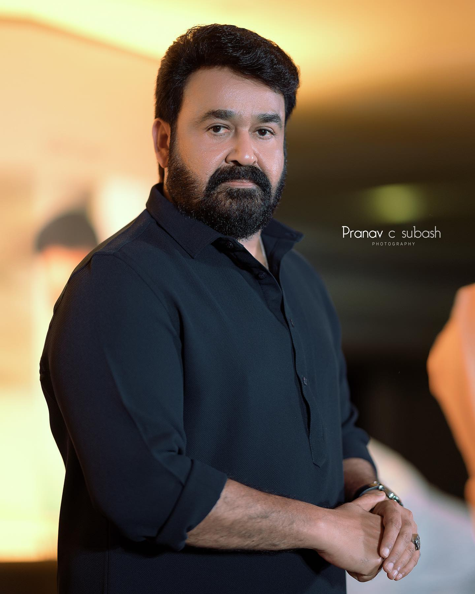
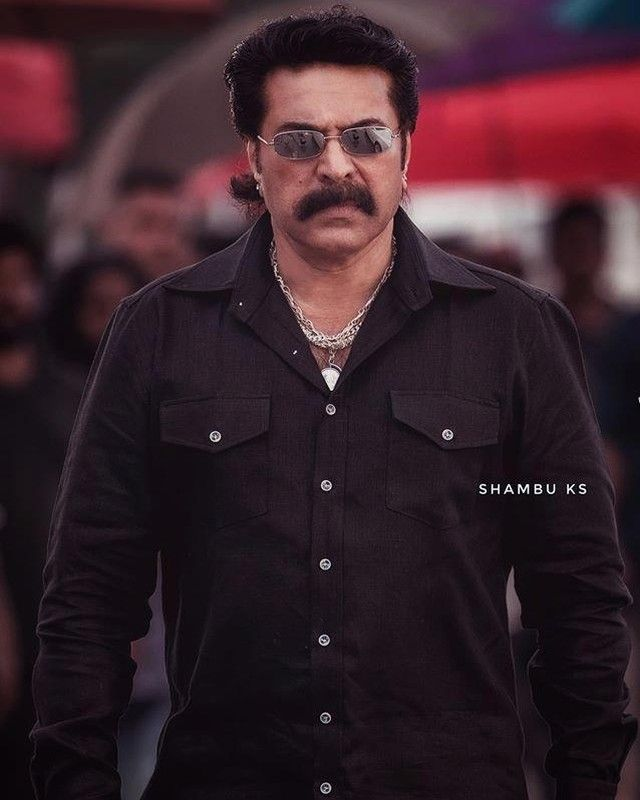
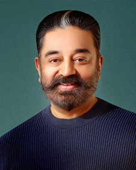

Mohanlal Viswanathan, known mononymously as Mohanlal, is an Indian actor, film producer, playback singer, film distributor, and director who predominantly works in Malayalam film industry besides also having sporadically appeared in Tamil, Hindi, Telugu and Kannada films.
wikipedia page

Muhammad Kutty Panaparambil Ismail, known mononymously by the hypocorism Mammootty, is an Indian actor and film producer who works predominantly in Malayalam-language films. He has also appeared in Tamil, Telugu, Kannada, Hindi, and English-language productions.
wikipedia page

Parthasarathy Srinivasan, known professionally as Kamal Haasan, is an Indian actor, film director, film producer, screenwriter, choreographer, playback singer, lyricist, television presenter, social activist and politician who works in Tamil cinema.
wikipedia page